1 - радиационная защита; 2 - источник гамма-излучения; d - толщина радиационной защиты; M - расчётная точка; R - расстояние от центра источника до расчётной точки.
| 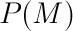 | мощность экспозиционной дозы в точке 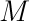, Р/ч; | |
| 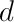 | толщина защиты, см; | |
| 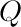 | активность источника, мКи; | |
| 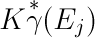 | гамма-постоянная для гамма-излучения с энергией 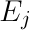; | |
| 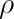 | плотность материала защиты, г/см3; | |
| 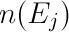 | выход гамма-излучения с энергией , абс. единицы; | |
| 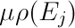 | массовый коэффициент ослабления излучения с энергией , см2/г; | |
| 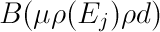 | дозовый фактор накопления гамма-излучения с энергией , абс. единицы; | |
| 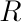 | расстояние от центра источника до расчётной точки, см; | |
| Примечания. | ||
| Суммирование в формуле проводится по всем линиям спектра излучения 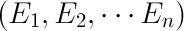; | ||
| гамма-постоянная 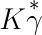 взята из справочника "Защита от ионизирующих излучений" (Атомиздат); | ||
| массовые коэффициенты ослабления излучения взяты из справочника "Сечения взаимодействия гамма-излучения (для энергий 0,001-100 Мэв и элементов с 1 по 100)" (Los Alamos Scientific Laboratory, New Mexico); | ||
| факторы накопления взяты из справочников "Защита от ионизирующих излучений" (Атомиздат), "Справочник по радиационной безопасности" (Энергоатомиздат); | ||
| интерполяция , 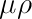 и проводится с помощью входящего в состав билблиотеки SciPy (модуль scipy.interpolate) пакета LAPACK — Linear Algebra PACKage (разработка ), методом кубических сплайнов. | ||
"Сечения взаимодействия гамма-излучения (для энергий 0,001-100 Мэв и элементов с 1 по 100)". Справочник. Перевод с английского. Атомиздат, Москва, 1973. 256 страниц. Storm Ellery, Israel Harvey. "Photon cross sections from 0,001 to 100 Mev for elements 1 through 100". Los Alamos Scientific Laboratory, New Mexico, 1967 June.
"Справочник по радиационной безопасности", 4-е издание, переработанное и дополненное. Энергоатомиздат, Москва, 1991. 352 страниц. ISBN 5-283-03063-6.
"Защита от ионизирующих излучений". Справочник. Атомиздат, Москва, 1966.
Recommendation for "Data on shielding from ionizing radiation. Part 1. Shielding from gamma radiation" British Standarts House, London, 1966. B.S. 4094 : Part 1 : 1966.